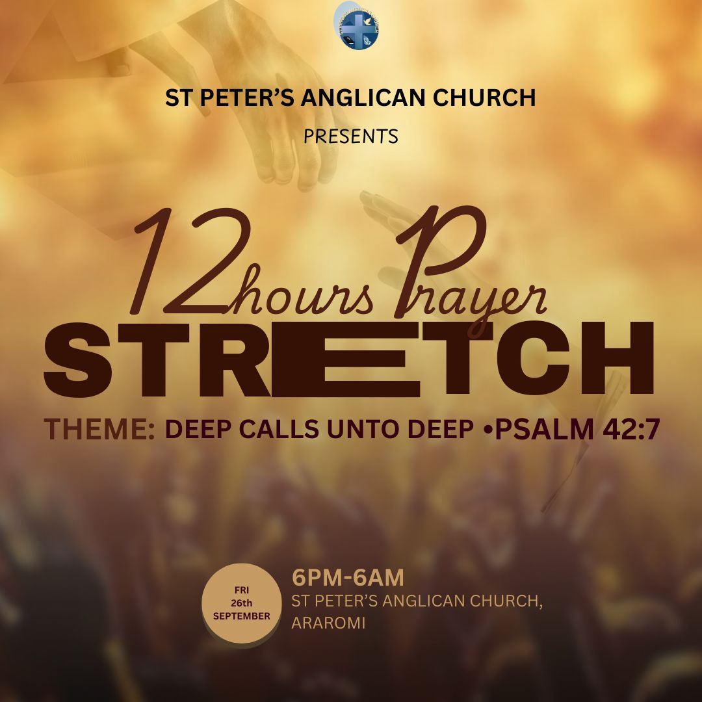
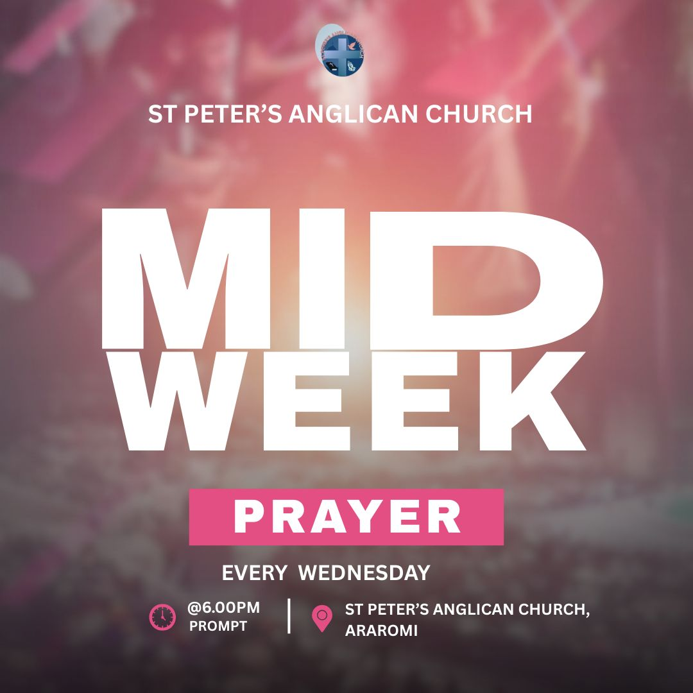
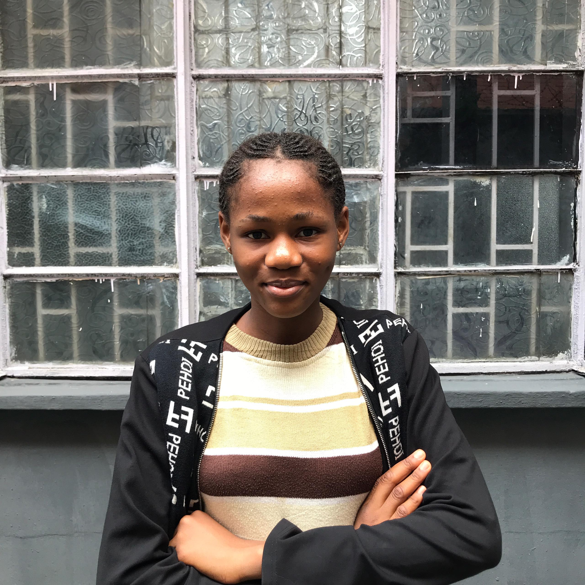

UPCOMING EVENTS



"I SUBMITED MY FIRST PRAYER REQUEST WITH TREMBLING HANDS,ONLY TO BE MET WITH A WAVE OF SUPPORT AND'AMENS' FROM MY BROTHERS AND SISTERS IN CHRIST.I FINALLY UNDERSTOOD WHAT IT MEANS TO BEAR ONE ANOTHER'S BURDENS"
- Ovie Mmaduka
"I STARTED WITH THE DAILY PRAYER GUIDE ON THE SITE,IT BROKE DOWN THE BEAUTIFUL LANGUAGE OF THE COLLECT INTO SIMPLE,MODERN WORDS I COULD CONNECT WITH. IT DIDN'T JUST TEACH ME TO PRAY;IT MADE WANT TO PRAY EVERY SINGLE MORNING"
- Chidinma Okoro
"OUR FAMILY USES THE PRAYER REQUEST FEATURE EVERY WEEK. AFTER WE SUBMIT OUR OWN NEEDS,WE PRAY THROUGH A FEW REQUEST FROM OTHERS ON THE WALL. THEN WE READ THE WEEKLY COLLECT TOGETHER. IT'S A SIMPLE RHYTHM THAT HAS MADE OUR FAITH TRULY LIVED-IN AND SHARED"
- Marvelous Adebayo
FIND GOD,FULFILL YOUR PURPOSE
AND FUEL YOUR PRAYER LIFE.
SERVICES
PRAYER SITES
CONTACT
SOCIAL MEDIA
GIVINGS
FAQ
SUPPORT POLICY
ABOUT US
TERMS&CONDITIONS

stpeters619@gmail.com

08145972013

11,Fasaasi,Araromi
@st.peter_ang_